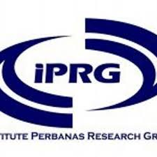
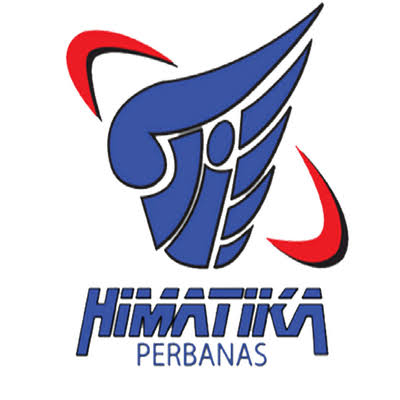

Institute Perbanas Research Group
IPRG (Institute Perbanas Research Group) ialah UKM riset pertama dan satu - satunya di Institut Perbanas. UKM ini merupakan wadah bagi mahasiswa untuk menyalurkan minat mereka dalam bidang riset dan penelitian. IPRG resmi dibentuk pada 28 Oktober 1998 dengan nama SPRG (STIMIK Perbanas Research Grup). SPRG berganti nama menjadi IPRG mengikuti perkembangan dari pergabungannya STIMIK dan STIE menjadi Institut Perbanas.

HIMATIKA Perbanas Institut
Himpunan Mahasiswa Teknik Informatika (Himatika) adalah organisasi yang bertujuan untuk mengembangkan kualitas mahasiswa/i dari jurusan Teknik Informatika dan dijadikan sebagai wadah menyalurkan inspirasi dan aspirasi. Himatika ABFI Institute Perbanas didirikan oleh mahasiswa STIMIK Perbanas jurusan Teknik Informatika angkatan 2000 tetapi baru aktif di tahun 2002. Tanggal 16 Juli 2008 Himatika ABFI Institute Perbanas telah berdiri secara resmi dan disahkan oleh pihak lembaga sebagai salah satu Organisasi Mahasiswa (Ormawa) yang ada di ABFI Institute Perbanas.

HIMSI Perbanas Institut
Himpunan Mahasiwa Sistem Informasi Institut Perbanas Jakarta Atau disingkat dengan ”HIMSI Institut Perbanas didirikan pada tanggal 19 Juli 2006 dan disahkan pada tanggal 7 Agustus 2006 di Institute Perbanas Jakarta”.Awal mula gagasan didirikannya HIMSI institute perbanas ialah Mahasiswa Sistem Informasi Institute Perbanas menyadari Bahwa Informatika sebagai ilmu pengetahuan dalam bidang komputer turut memegang peranan penting dalam pembangunan dan pengembangan Bangsa dan Negara pada saat ini.Untuk itu, maka dengan penuh rasa tanggung jawab, mahasiswa sistem informasi Institut Perbanas Jakarta bersatu dalam suatu Himpunan Mahasiswa Sistem Informasi Institut Perbanas Jakarta untuk mencapai tujuan tersebut yang berlandaskan Pancasila dan Undang-Undang Dasar 1945.